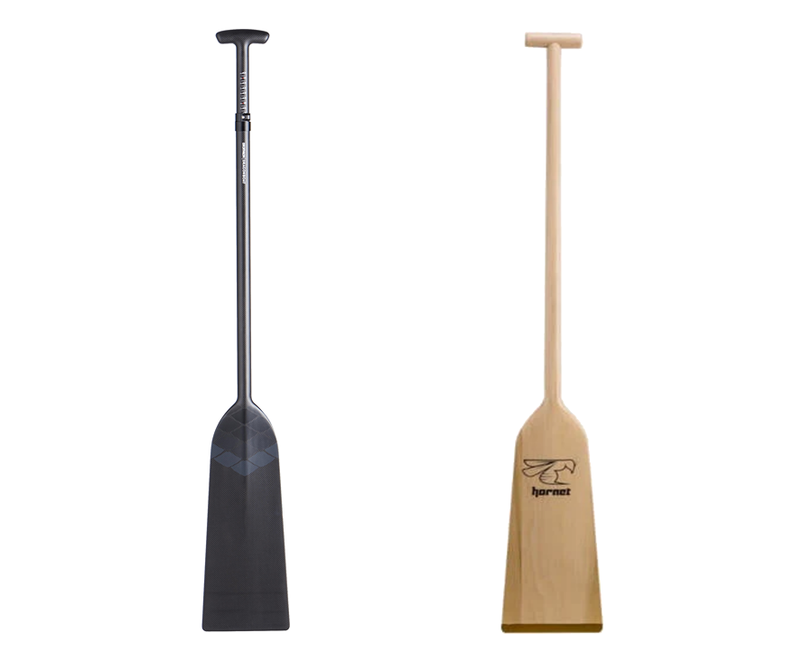
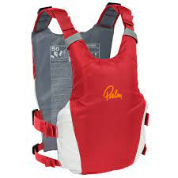
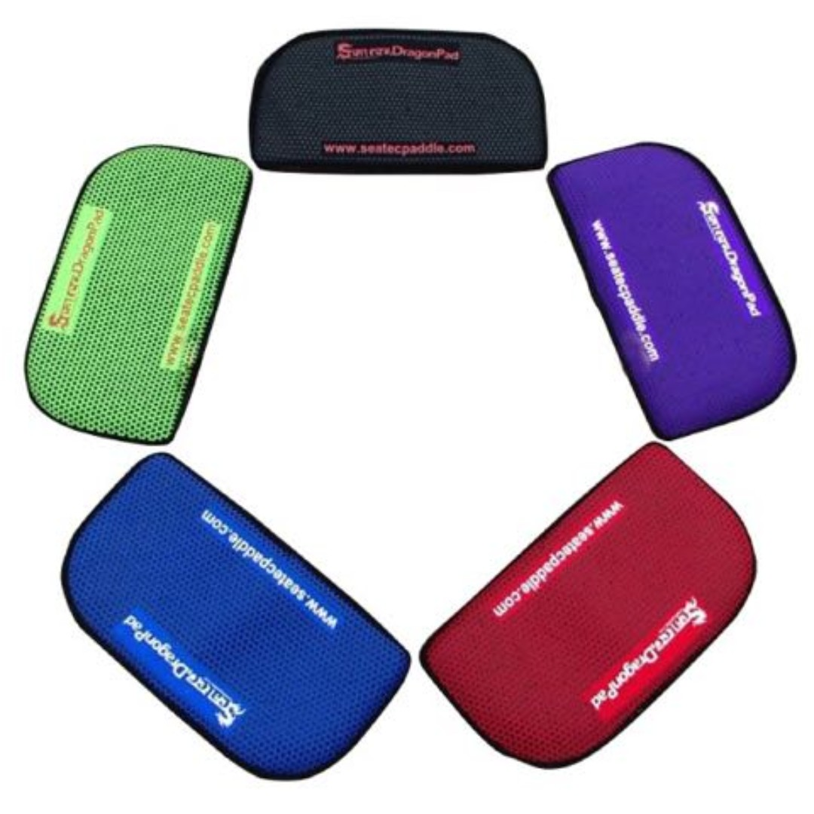
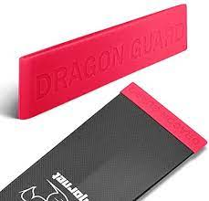
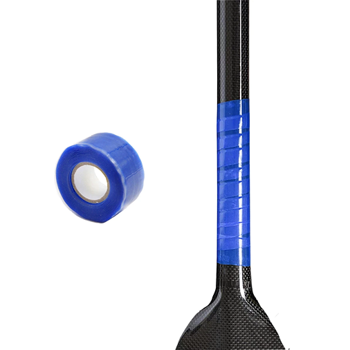

Pick an item!

Paddle
A Paddle is essential when it comes to dragonboating.
It is used to dip into the water and pulled with force backwards
in order to propel the boat forward.

PFD (Personal Floating Device)
Must be worn when loading up onto a boat.
Not to be confused with PDF (Portable Document Format)
Helps the wearer stay a float in water if the boat capsizes

Seatpad
Velcro it onto the boat seat.
Acts as support when the person is paddling,
where their body is constantly moving back and forth.

Blade Guard
Can be slipped onto the end of the blade.
Protects the edge of the blade from being damaged,
since it'll most likely be in contact with the ground.

Grip Tape
Tape that can be applied at where the person
places the arm that moves backwards.
Helps the person have a firmer grip,
in cases of slipping on the water repellent material.